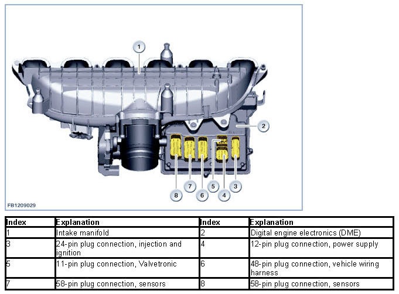
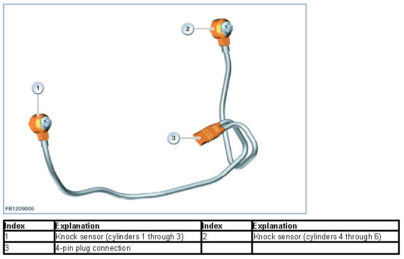
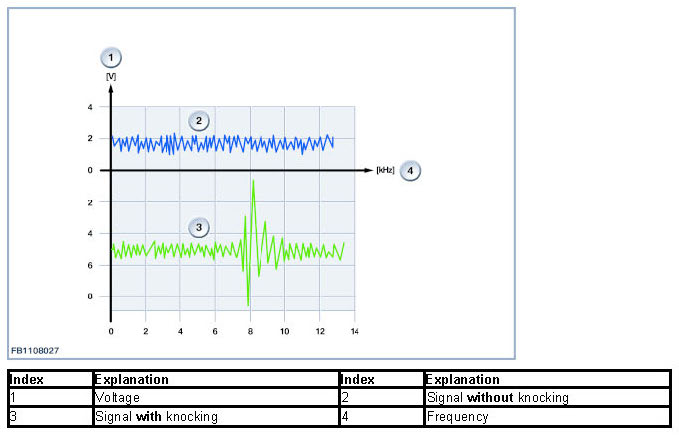
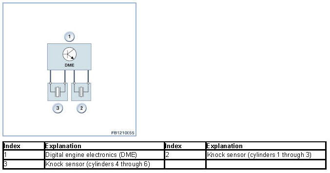

Knock Control
Knock Control
Knock control
Engines with a compression ratio greater than 10.0 : 1 are high for a power plant was forced induction. Knock control monitors the combustion process.
The knock control features extended functionality. The DME digital engine electronics system is also capable of detecting high-intensity "super-knocking" (a type of auto-ignition).
Brief component description
Descriptions are provided for the following knock-control system components:
- Digital Engine Electronics
- Knock sensor.
Digital Motor Electronics
The DME digital engine electronics module is mounted on the intake system in the immediate vicinity of the engine, and is cooled by the flow of induction air. The design of the plug connections between the wiring harness and the DME digital engine electronics module ensures they remain sealed against water when the connectors are plugged in.
The DME digital engine electronics module furnishes the power to the sensors and actuators directly. The top of the DME digital engine electronics module seals the corresponding opening in the induction system.
The Digital Engine Electronics (DME) is the computing and switching centre of the engine control system. Sensors on the engine and vehicle deliver the input signals. The signals employed to control the actuators are calculated using the input signals and the specified setpoint values stored in the Digital Engine Electronics (DME) as well as the characteristic maps. The DME digital engine electronics module activates the actuators directly or via relays.
Two sensors are located on the DME digital engine electronics module's printed circuit board:
- 1 Temperature sensor
- 1 Ambient barometric pressure sensor.
The temperature sensor monitors the thermal condition of the components in the DME digital engine electronics system.
The ambient pressure is required for calculation of the mixture composition.
The following graphic shows the engine N55 as example.

Knock sensor
Two knock sensors are employed depending on the engine.
The knock sensors detect oscillations in the structure-borne noise from the engine block. Combustion events accompanied by knock generate structure-borne noise characterized by a specific oscillation pattern; this is registered by the knock sensors for subsequent processing in the DME engine-management system's module.
The DME digital engine electronic system's knock control can then subdue the combustion knock with countermeasures such as adjusting the ignition timing.
The tendency for combustion knock to occur is influenced by the following factors:
- Pressure
- Temperature
- Fuel-air mixture
- Fuel grade (research octane number/motor octane number).
Combustion with knock contrasts with normal combustion in that portions of the air-fuel mixture ignite suddenly and spontaneously. These ignition events occur before the flame front initiated by the ignition spark during normal combustion reaches the affected portions of the air-fuel mixture. During these events the flame front propagates at velocities exceeding 300 m/s, while the comparable figure for normal combustion is approximately 30 m/s.
The following graphic shows the engine N55 as example.

When knock persists over an extended period, the pressure waves from this violent combustion of the air-fuel mixture can cause mechanical and thermal damage to the head gasket, the pistons and the cylinder head itself. The knock sensors register the characteristic oscillations from combustion knock and convert them into electrical signals for transmission to the DME digital engine electronics system module. Within the DME module the signals are processed according to firing order to allow correlation with specific individual cylinders.
The knock sensor detects structure-borne noise within a frequency range extending from 5 to roughly 20 kHz. Engine knock generally occurs within an approximate frequency range of 7 to 16 kHz. The DME digital engine electronics system selects the ideal processing frequency for detecting combustion knock with reference to the following factors:
- Engine speed
- Load
- Cylinder.

System overview
The following graphic shows the system overview of the knock control with the engine N55:

System functions
The following system functions are described:
- Knock control
- Super-knocking.
Knock control
The engine is equipped with a cylinder-specific, adaptive knock control system. Knocking tendency is increased by:
- Increased compression ratio
- High cylinder filling
- Low fuel grade/quality (research octane number/motor octane number)
- High intake-air and engine temperatures.
The value of the compression ratio can also become too high due to spread due to deposits or the manufacturing process. For engines without knock control, these unfavorable effects must be taken into consideration when designing the ignition system by applying a safety margin to the anti-knock limit. However, this results in unavoidable losses in efficiency in the upper load range. The knock control prevents knock. It retards the ignition point of the affected cylinder(s) (cylinder-specific) only as far as necessary and only if there is an actual risk of knocking. In this way, the ignition timing map can be adapted to the optimum consumption values (without having to take the knock limit into consideration). A safety distance is no longer necessary. The knock-control system adopts all of the corrections to ignition timing required to prevent knock and also allows completely satisfactory operation on regular petrol (minimum research octane number of 91). The knock control provides:
- Protection against damage resulting from engine knock (also under unfavorable conditions)
- adaptive functionality that allows the system to respond immediately to knock hazards by instantaneously dialing in the correct ignition timing, even under rapidly changing conditions
- Lower fuel consumption and higher torque throughout the entire upper end of the load range (variable according to the fuel grade being used)
- High levels of economy thanks to optimal exploitation of the available fuel grade (octane) and the ability to compensate for variations in the engine's condition.
Self-diagnosis of the knock control system includes the following checks:
- Checks for signal-related malfunctions, such as those stemming from open wires and plug connections
- Self-test of evaluation circuit
- Check of the level of engine-generated noise registered by the knock sensors.
The knock control system is switched off if a fault is found during the course of one of these checks. An emergency program assumes control of the ignition timing while simultaneously imposing a limit on torque generation. At the same time, the relevant fault is entered in the DME fault memory. The emergency program ensures damage-free operation on fuels with a Research Octane Number of 91 or above. The emergency program's response varies according to load factor, engine speed and coolant temperature.
NOTICE: Knock sensors in correct installation positions.
If multiple knock sensors are installed (e.g. with engine N55), the diagnostic function cannot detect and inadvertent mix-up of the two knock sensors. Installation of the knock sensors in the correct respective positions is of decisive importance for their correct operation. The length of the connecting cable and the distance to the cable connection identify the correct positions for the individual knock sensors. Ensure that the knock sensors are in the correct positions during installation3
Super-knocking
Super-knocking designates irregular combustion that occurs in engines operating with high-boost forced induction. When this condition occurs the combustion pressure rises from a normal level of roughly 100 bar up to levels as high as 200 bar. This phenomenon is caused by contaminants in particulate form within the combustion chamber that initiate combustion of the air-fuel mixture before the actual ignition firing point. For this reason it is not possible to prevent super-knocking by adjusting the ignition timing. When the DME digital engine electronics system detects super-knock it responds by reducing output to protect the engine. Super-knocking results in deactivation of the injection (for 3 to 6 cycles) on the affected cylinder. A fault (DTC) is also entered in the fault memory in response to recurring super-knock at high engine speeds. Under these conditions a damaged spark plug can be considered as a potential problem source.
We can assume no liability for printing errors or inaccuracies in this document and reserve the right to introduce technical modifications at any time.